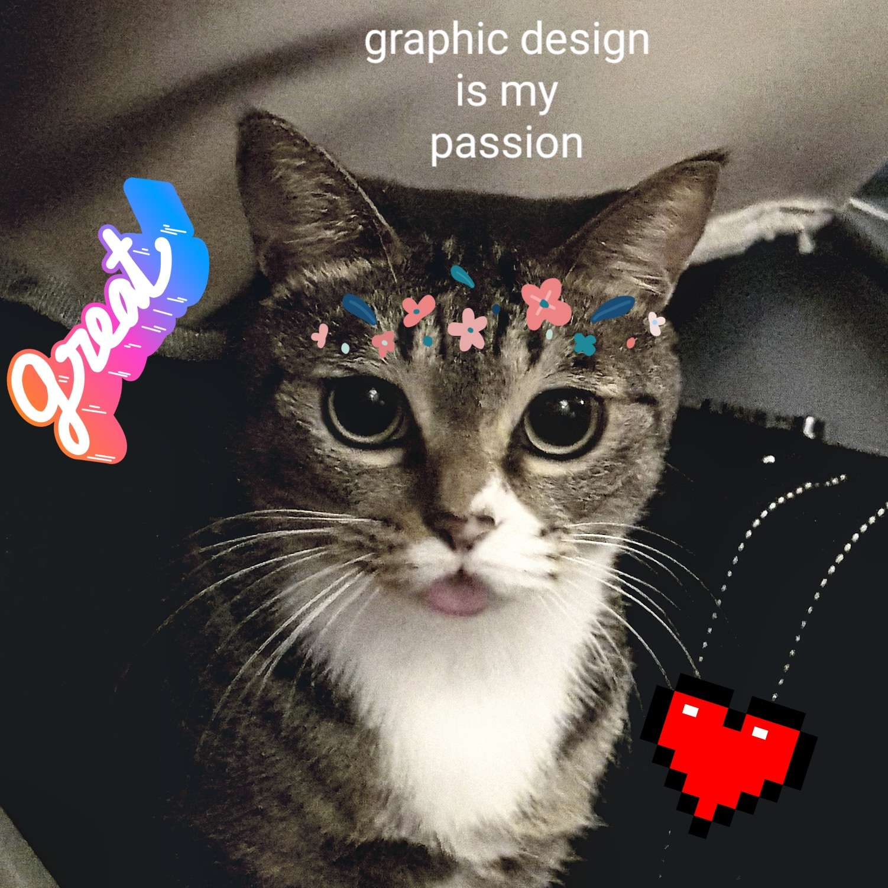

These cats are available for consulting 24 hours a day because they work in three 8 hour shifts.
"It doesn't seem legal, but what do I know?" - Jim Halpert Einstein
Sign Up
Cats improve all aspects of business in ways you could never hope to achieve, human.
Taru specializes in security. He resolves situations peacefully because he's scared of escalating conflict.

Neko spearheads our creative department. She monitors social media and manifests sick lofi beats.
Jojo is here for your human resource needs. He purrs, he cuddles, he invests in a proactive safety culture that will prevent injuries, accidents, and unwelcome incidents.
"Neko predicted a bright future, Jojo hired excellent contractors, and Taru provided a secure environment for my company to flourish! I barely did anything at all, which was nice because I'm the CEO of five different companies and I just don't have time to monitor what cats are doing."